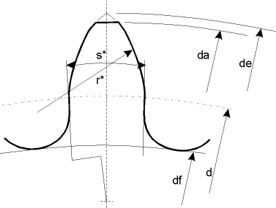

|
|
|


圆弧齿
圆弧齿这一特殊齿形类型可以通过齿面半径和分度圆处的齿厚来定义。在齿根区域形成一个圆弧。
经典的圆弧周节齿布置，例如按 NIHS 20-25 [31] 规定，由一个从分度圆开始、半径为 r 的圆弧、一条从分度圆以下朝齿轮中心方向延伸的直线，以及一个完整的齿根圆角组成。

图 15.81：轮齿上的圆弧
注意
此工序不应与“自动”工序结合，除非有意为之。要禁用“自动”，右键点击“禁用”。
Circular arc teeth
The circular arc teeth special toothing type can be defined using the tooth flank radius and the tooth thickness at the reference circle. An arc of circle is created in the root area.
A classic arrangement of circular pitched teeth, for example, as specified in NIHS 20-25 [31] consists of an arc of circle with radius r starting from the reference circle, a straight line that progresses in the direction of the center of the gear below the reference circle, and a full root rounding.
Figure 15.81: Arcs of circle on the tooth
Note
This operation should not be combined with the "automatic" operation, if this is not intended. To deactivate "automatic", right-click "Deactivate".